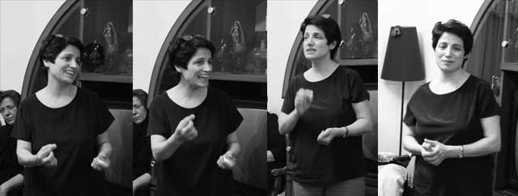

|
|

نسرین ستوده، پس از 49 روز با لغو حکم ممنوع الخروجی دخترش به اعتصاب غذای خود پایان داد
سه شنبه14 آذر 1391

تغییر برای برابری: نسرین ستوده، با لغو حکم ممنوع الخروجی دخترش مهراوه، بعد از 49 روز به اعتصاب غذای خود پایان داد.
رضا خندان، همسر نسرین ستوده، در صفحه فیس بوک خود نوشته است:« در ملاقات استثنایی عصر امروز، نسرین با توجه به برداشتن محدویت قضایی مهراوه به اعتصاب خود پایان داد».
رضا خندان از فعالان زن که در این چند روز از کانالهای مختلف، پیگیر وضعیت نسرین ستوده شده بودند، تشکر کرده است.
دهها تن از فعالان زن با نوشتن نامه ای نسبت به وضعیت وخیم نسرین ستوده ابراز نگرانی کرده بودند و صبح یکشنبه 11 آذرماه برای نشان دادن این نگرانی، مقابل دادستانی تهران جمع شده بودند تا نامه خود را به دادستان برسانند. آنها در این نامه که خطاب به دادستان کل تهران، جعفری دولت آبادی، نوشته شده و به امضای تعدادی از مدافعان حقوق زنان رسیده بود، ضمن اعلام حمایت از خواسته های نسرین ستوده، درخواست انتقال سریع وی به بیمارستانی مجهز را مطرح کرده بودند. فعالان زنان خواهان ملاقات با دادستان کل تهران بودند که با اعلام ممکن نبودن این دیدار، نامه را به معاون دادستان، خدابخشی، تحویل دادند.
در روز دوشنبه 12 آذرماه، فعالان حقوق زنان در ادامهی حرکت روز گذشته خود، برای پیگیری وضعیت نسرین ستوده وکیل و مدافع حقوق زنان به قوه قضاییه مراجعه کردند. به گفته یکی از این فعالان بعد از ورود به اداره کل دبیرخانه قوه قضاییه به سه نفر از آن ها اجازه دیدار با کارشناس این اداره داده شد. کارشناس مزبور که به گفتهی مراجعان برخورد مناسبی نیز با آنها داشته ضمن شنیدن ابراز نگرانی آنها از وضعیت سلامتی نسرین ستوده، مقدمات دیدارشان با نوری معاون رئیس سازمان زندانها را فراهم کرده است.
امروز سه شنبه 13 آذرماه، حدود 50 نفر ازفعالان زن به همراه آقای رضا خندان همسر نسرين ستوده در راستاي پيگيري وضعيت اين وكيل پايه يك دادگستري و فعال حقوق زنان و درخواست به حق او مبني بر رفع ممنوعالخروج بودن دختر 12 سالهاش مهراوه و همسرش به محل ملاقات عمومي نمايندگان مجلس شوراي اسلامي رفتند و خواستار ملاقات با تعدادي از نمايندگان مجلس شدند.
طی 49 روزی که نسرین دست به اعتصاب غذا زد، فعالیت گسترده ای در داخل و خارج ایران و از جانب فعالان زن، نهادهای حقوق بشری و فمنیستی برای حمایت از نسرین دنبال شد. بیانیه ها و فعالیت های فعالان زن درداخل و همچنین خارج ایران برای کسب حمایت های بین المللی از سازمان ها و جنبش های زنان در جهان، نامه شیرین عبادی به احمد شهید تا بیانیه ها و اکسیون های مختلف سازمان های عفو بین الملل ودیده بان حقوق بشر، گزارشگران حقوق بشر..، اهدای جایزه ساخاروف به نسرین ستوده و جعفر پناهی و نصب تصاویر آنان در پارلمان اروپا در بروکسل، حمایت های گسترده ی مردمی در شبکه های اجتماعی و همبستگی با نسرین از طریق اعتصاب غذا و یا درخواست برای شکستن اعتصاب، حضور گسترده و قدرت مند فیس بوکی و... همه و همه تلاش همگانی بود برای همبستگی با نسرین برای خواسته ای حقوقی و بدیهی که از او دریغ شده بود.
این پیروزی و ایستادگی به یار همیشگی نسرین، رضا خندان، فرزندان گرامی اش و همه ما مبارک باد.